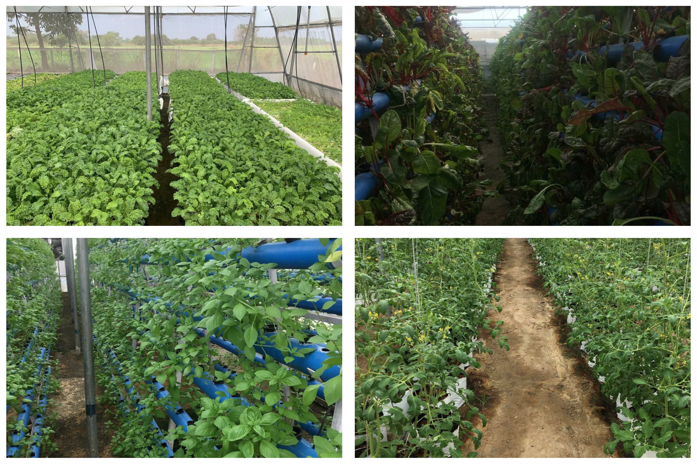
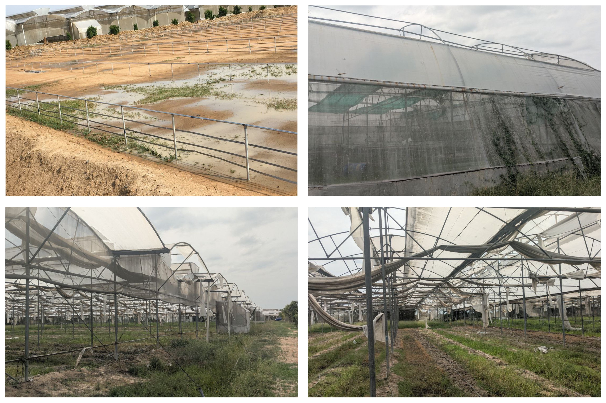
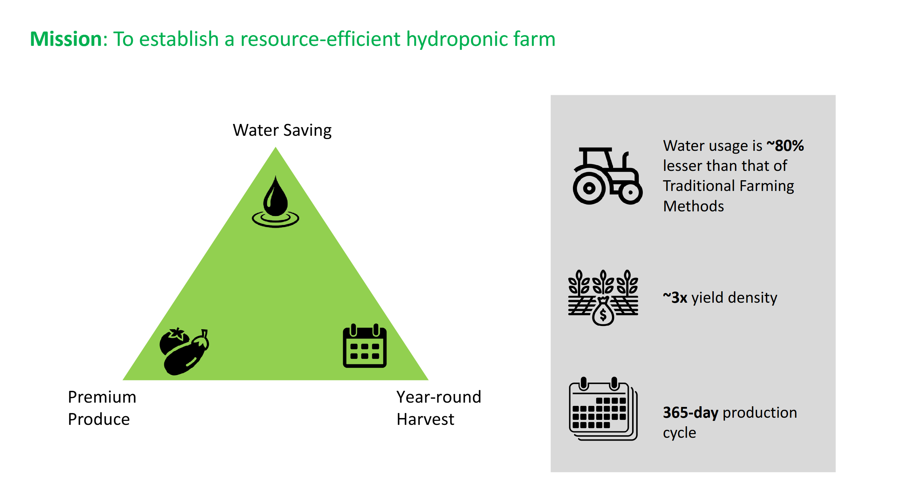

About Seechur Agro
Seechur Agro is reviving a proven hydroponic & protected-cultivation farm at Edaiyarpakkam, Tamil Nadu — shifting to premium, traceable crops such as Lakadong turmeric, English cucumber and microgreens. We are refurbishing the greenhouse after the 2015 cyclone to restart a capital-efficient, sustainability-first operation.
Our Farm: Before and After Cyclone

Before Cyclone Fully functional polyhouse operations with dense basil and cucumber beds; steady supply to modern trade.

Post Cyclone Structure damage and degraded beds — refurbishment (cladding, irrigation, fertigation, benches) is underway with investor capital.
Our Mission
To establish a resource-efficient hydroponic farm that uses ~80% less water than traditional cultivation, delivers ~3× yield density, and enables 365-day premium produce.

Why We’re Raising Capital
The site already has ~5.25 acres of polyhouse, high-capacity borewell (17,700 L/hr) and 38KW solar support. Funding accelerates: (1) structural refurbishment, (2) fertigation & benches, (3) Lakadong nursery & microgreens benches, (4) working capital for the first crop cycle.

0–3 months: Refurbish & recommission. Microgreens start by Day-30.

Month 4–6: Vegetables stabilise; Lakadong nursery in progress.

~Month 7: First Lakadong production cheque; steady multi-crop revenue thereafter.
What Guides Us
Water & Energy Efficiency
Residue-safe, traceable produce
Capital efficiency & quick payback
Modern trade & export readiness